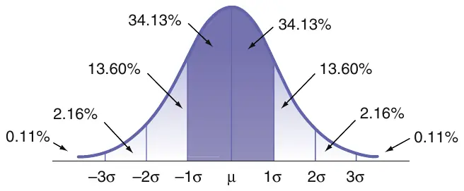

نسخه استخراجشده؛ ترجمه یا تأیید علمی انجام نشده است. وضعیت: captured
بیماری میگوید: «بار پیش بیحسیام بعد از ۱۵ دقیقه رفت و دندانپزشک گفت بدنم دارو را زود میسوزاند.» امروز همان لیدوکائین ۲٪ با اپینفرین را برای اینفیلتراسیون لترال بالا آماده کردهای. آن توضیح درست بود؟

عددهایی که برای مدت هر دارو میگوییم مال بیمار میانهی منحنی زنگولهای است. اگر لیدوکائین با اپینفرین را با اینفیلتراسیون روی لترال بالای ۱۰۰ نفر بزنی:
متابولیسم دارو ربطی به تمام شدن اثر بالینی بیحسی ندارد. بیحسی کوتاه این بیمار پاسخ فردی اوست.
بیحسیها را بر پایهی مدت بیحسی پالپ سه دسته میکنند. بیحسی بافت نرم همیشه خیلی بیشتر از پالپ طول میکشد.
اشتباه رایج: یک کارپول برای همهی کارها. لیدوکائین با اپینفرین برای کار ۱۰ دقیقهای، ۳ تا ۵ ساعت بیحسی بیفایدهی لب میگذارد و در کار ۹۰ دقیقهای احتمالاً آخر کار درد میدهد. دستکم دو دستهی مدت اثر را در مطب داشته باش.